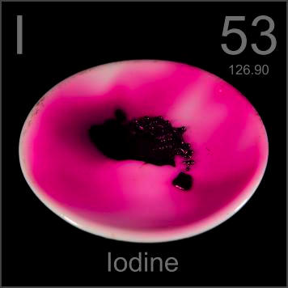

HOME
PREVIOUS
NEXT

Iodine
Atomic Weight: 126.90447
Density: 4.94 g/cm3
Melting Point: 113.7 °C
Boiling Point: 184.3 °C
Iodine sublimates into a beautiful violet vapor when heated: There's a torch under the plate in this photo. Iodine and iodine solutions were used as disinfectants before better antiseptic agents were found.